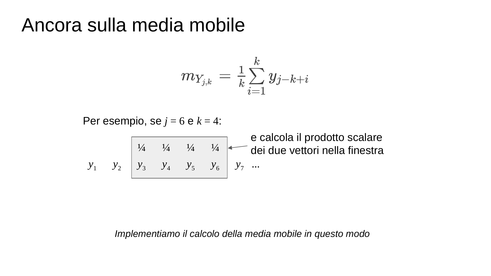
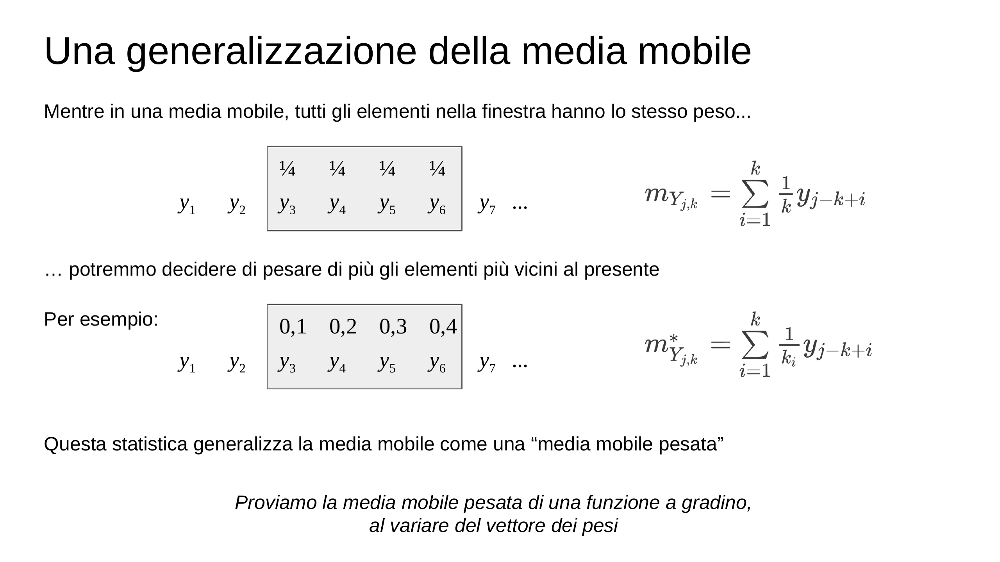

![Qualche suggerimento: – consulta l’“Aula Virtuale” su ecorsi – usa il materiale didattico, e non solo i tuoi appunti – frequenta le lezioni, e fallo in modo attivo, anche nella parte “laboratoriale” – lavora in modo costante – confrontati regolarmente con qualche compagna/o – cerca di capire e di imparare a risolvere problemi, non di memorizzare · (vedi il materiale didattico, capitolo 4. Analisi di serie storiche) (e puoi valutare le tue conoscenze e competenze a partire dagli esempi di problemi proposti)](img/03-1f7ca589cc.webp)

![Serie storiche come particolari campioni · Torniamo a considerare un generico campione A =〈ai〉i=1,...,n · Già sappiamo che A è interpretabile come una funzione, ai = a(i), A : I→X in cui il dominio I è l’insieme degli indici del campione il codominio X è l’insieme dei valori possibili per gli elementi del campione · Se i ∈ I è l’istante di tempo t in cui l’elemento ai è stato acquisito, il campione si chiama serie storica (in inglese: time series) (se i dati si riferiscono a una grandezza fisica, la serie è abitualmente chiamata segnale)](img/05-d6ffb5c50f.webp)
![Serie storiche e campionamento · Di una serie storica A =〈at〉=〈a(t)〉=〈a(t0), a(t1), ...〉assumiamo per semplicità che gli istanti di tempo t di campionamento siano equidistanziati, e dunque che per ogni i, il periodo di campionamento ti+1 – ti sia costante, Δt (in pratica, che si acquisisca un elemento ogni Δt) Questo ci consente di scrivere nuovamente a(i), e perciò anche ai, al posto di a(ti) · Il numero di elementi acquisiti per unità di tempo è la frequenza di campionamento · Le serie storiche A : T→X si rappresentano mediante grafici x-y, mettendo in ascissa il tempo](img/06-e6afa8e6e4.webp)


Sondaggio · 30 secondi
Hai capito il cammino casuale?
Un cammino casuale parte da 100.
A ogni passo aggiunge un numero a caso tra −1 e +1.
Dopo 100 passi, dove te lo aspetti?
- 1Intorno a 0
- 2Intorno a 100
- 3Intorno a 200
- 4Sempre esattamente 100
Inquadra il QR · voto anonimo, uno per telefono · risultati con V
Premi V per i risultati

![In laboratorio: il cammino casuale · LABORATORIO · 1. Foglio nuovo. In A1 scrivi t, in B1 scrivi x 2. Parametri: H2 «x iniziale», H3 «passo minimo», H4 «ampiezza del passo»; in I2, I3, I4 i valori 0, −1, 2 3. A2: 0 A3: =A2+1 e ricopia fino ad A101 4. B2: =$I$2 B3: =B2+$I$3+$I$4*CASUALE() e ricopia fino a B101 5. Seleziona A1:B101 › Inserisci › Dispersione con linee rette 6. Premi F9 più volte. Poi metti −0,9 in I3: che cosa cambia? E con −1,1? Domanda: il passo è un numero a caso tra I3 e I3+I4. Quanto vale in media?](img/11-d1885a623f.webp)
![Mettiti alla prova! Il magazzino · CHALLENGE · Un negozio parte con 30 pezzi in magazzino. Ogni giorno arrivano dal fornitore tra 0 e 10 pezzi e i clienti ne comprano tra 0 e 10 (numeri interi a caso). 1. Simula la scorta per 60 giorni e fanne il grafico 2. Qual è la scorta minima? E la massima? 3. In quanti giorni la scorta è sotto i 10 pezzi? 4. Premi F9 dieci volte: quante volte la scorta va sotto zero? Che cosa vuol dire per il negozio? 5. Se i clienti comprano tra 0 e 11 pezzi al giorno, che cosa cambia? Perché? Ti servono: CASUALE.TRA(0;10), MIN, MAX, CONTA.SE](img/12-d1049c08dc.webp)


Statistiche mobili · ampiezza della finestra
Quanto è lunga la finestra? Lo dice la curva
Media mobile su k giorni: più k cresce, più la curva è liscia e più pesa il passato.
Ritardi dei treni alla stazione di Gallarate, 1 maggio – 31 luglio 2024 (92 giorni). Dati: CoMuNeLab, adaptsys_train-delays (licenza MIT).
giorni che entrano nella media
- Con 2–4 giorni la curva segue quasi ogni oscillazione.
- Con 7 giorni si attenua il ciclo della settimana.
- Con 20–30 giorni è liscia, ma i picchi si appiattiscono.
Trascina il cursore: la banda blu è la finestra che produce il punto rosso del 10 giugno.


Sondaggio · 30 secondi
Progressiva o mobile?
Che cosa distingue la media progressiva dalla media mobile?
- 1Progressiva: tutti i valori; mobile: ultimi k
- 2Progressiva: ultimi k; mobile: tutti i valori
- 3Progressiva: un numero; mobile: una serie
- 4Sono la stessa cosa
Inquadra il QR · voto anonimo, uno per telefono · risultati con V
Premi V per i risultati




![Mettiti alla prova! I ritardi dei treni a Gallarate · CHALLENGE · File ritardi_treni_gallarate.xlsx, foglio «Gallarate_2024»: per ogni giorno del 2024, la somma dei minuti di ritardo dei treni alla stazione di Gallarate. 1. Fai il grafico della serie 2. Calcola la media mobile su 7 giorni e quella su 30 giorni e aggiungile al grafico 3. Che cosa sparisce con la media su 7 giorni? Perché proprio 7? 4. In quale periodo dell'anno i ritardi sono più bassi? E più alti? 5. Calcola la media progressiva: a che valore arriva il 31 dicembre? Dati: CoMuNeLab, github.com/CoMuNeLab/adaptsys_train-delays…](img/23-8c678250b6.webp)